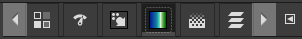

The GIMP user interface is available in two modes:
-
multi-window mode,
-
single window mode.
When you open GIMP for the first time, it opens in single-window mode by default. You can enable multi-window mode by unchecking the → option in the main menu. After quitting GIMP, GIMP will start in the mode you have selected next time.
- Multi-Window Mode
-
The screenshot above shows the most basic multi-window arrangement for GIMP that can be used effectively.
On the left and right you see two panels, with an image window in the middle. A second image is partially masked. The left panel contains the Toolbox as well as Tool Options, Device Status, Undo History and Images dialogs together. The right panel contains Brushes, Patterns, Fonts and Document History dialogs together in a multi-tab dock, and Layers, Channels and Paths dialogs together in another multi-tab dock.
-
The Toolbox: Contains a set of icon buttons used to select tools. By default, it also contains the foreground and background colors. You can add brush, pattern, gradient and active image icons. Use → → to enable, or disable the extra items.
-
Tool options: Docked below the Toolbox is a Tool Options dialog, showing options for the currently selected tool (in this case, the Move tool).
-
Image windows: Each image open in GIMP is displayed in a separate window. Many images can be open at the same time, limited by only the system resources. Before you can do anything useful in GIMP, you need to have at least one image window open. The image window holds the Menu of the main commands of GIMP (File, Edit, Select, etc.), which you can also get by right-clicking on the window.
An image can be bigger than the image window. In that case, GIMP displays the image in a reduced zoom level which allows to see the full image in the image window. If you turn to the 100% zoom level, scroll bars appear, allowing you to pan across the image.
-
The Brushes, Patterns, Fonts, Document History dock — note that the dialogs in the dock are tabs. The Brushes tab is open: it shows the type of brush used by paint tools.
-
Layers, Channels, Paths: The docked dialog below the brushes dialog shows the dialogs (tabs) for managing layers, channels and paths. The Layers tab is open: it shows the layer structure of the currently active image, and allows it to be manipulated in a variety of ways. It is possible to do a few very basic things without using the Layers dialog, but even moderately sophisticated GIMP users find it indispensable to have the Layers dialog available at all times.
Dialog and dock managing is described in Section 2.3, “Dialogs and Docking”.
-
- Single Window Mode
-
You find the same elements, with differences in their management:
-
Left and right panels are fixed; you can't move them. But you can decrease or increase their width by dragging the moving pointer that appears when the mouse pointer overflies the right border of the left pane. If you want to keep the left pane narrow, please use the scroll bar at the bottom of the tool options to pan across the options display.
If you reduce the width of a multi-tab dock, there may be not enough room for all tabs; then arrow-heads
 ,
,
 appear allowing you
to scroll through tabs.
appear allowing you
to scroll through tabs.

As in multi-window mode, you can mask these panels using the Tab key.
-
The image window occupies all space between both panels.
When several images are open, a new bar appears above the image window, with a tab for every image. You can navigate between images by clicking on tabs or either using Ctrl+Page Up or Page Down or Alt+Number. “Number” is tab number; you must use the number keys of the upper line of your keyboard, not that of keypad (Alt-shift necessary for some national keyboards).
-
This is a minimal setup. There are over a dozen other types of dialogs used by GIMP for various purposes, but users typically open them when they need them and close them when they are done. Knowledgeable users generally keep the Toolbox (with Tool Options) and Layers dialog open at all times. The Toolbox is essential to many GIMP operations. The Tool Options section is actually a separate dialog, shown docked to the Main Toolbox in the screenshot. Knowledgeable users almost always have it set up this way: it is very difficult to use tools effectively without being able to see how their options are set. The Layers dialog comes into play when you work with an image with multiple layers: after you advance beyond the most basic stages of GIMP expertise, this means almost always. And of course it helps to display the images you're editing on the screen; if you close the image window before saving your work, GIMP will ask you whether you want to close the file.
![[Note]](images/note.png)
|
Note |
|---|---|
|
If your GIMP layout is lost, your arrangement
is easy to recover using
→ .
This menu command is only available while an image is open.
To add, close, or detach a tab from a dock, click
|
The following sections walk you through the components of each of the windows shown in the screenshot, explaining what they are and how they work. Once you have read them, plus the section describing the basic structure of GIMP images, you should have learned enough to use GIMP for a wide variety of basic image manipulations. You can then look through the rest of the manual at your leisure (or just experiment) to learn the almost limitless number of more subtle and specialized things that are possible. Have fun!
The Toolbox is the heart of GIMP. Here is a quick tour of what you will find there.
![[Tip]](images/tip.png)
|
Tip |
|---|---|
|
In the Toolbox, as in most parts of GIMP, moving the mouse over something and letting it rest for a moment, usually displays a “tooltip” that describes the thing. Short cut keys are also frequently shown in the tooltip. In many cases, you can hover the mouse over an item and press the F1 key to get help about the thing that is underneath the mouse. |
By default, only the Foreground/Background Colors area is visible. You can add the Brush/Pattern/Gradient area and Active Image area through → → : Tools configuration.
-
The GIMP logo: At the top of the toolbox, you can click-drag-and-drop images from a file browser into this area or into the tool icons to open the images. You can hide this logo by unchecking the Show GIMP logo option in the Toolbox Preferences.
-
Tool icons: These icons are buttons which activate tools for a wide variety of purposes: selecting parts of images, painting an image, transforming an image, etc. Section 1, “The Toolbox” gives an overview of how to work with tools, and each tool is described systematically in the Tools chapter.
-
Foreground/Background colors:
The color area shows GIMP's current foreground and background colors, which are used for painting, filling, and many other operations. Clicking on either one of them brings up a color selector dialog that allows you to change to a different color.
Clicking on the small symbol in the lower left corner resets the foreground and background colors to black and white. Pressing the D key has the same effect.
Clicking on the double-headed arrow symbol swaps the foreground and background colors. Pressing the X key has the same effect.
-
Brush/Pattern/Gradient: The symbols here show you GIMP's current selections for: the Paintbrush, used by all tools that allow you to paint on the image (“painting” includes operations like erasing and smudging, by the way); for the Pattern, which is used in filling selected areas of an image; and for the Gradient, which comes into play whenever an operation requires a smoothly varying range of colors. Clicking on any of these symbols brings up a dialog window that allows you to change it.
-
Active Image: In GIMP, you can work with many images at once, but at any given moment, only one image is the “active image”. Here you find a small iconic representation of the active image. Click the icon to display a dialog with a list of the currently open images, click an image in the dialog to make it active. Usually, you click an image window in multi-window mode, or an image tab in single-window mode, to make it the active image.
If you use GIMP on a Unix-like operating system with the X Window System, you can also drag and drop the thumbnail to an enabled XDS file manager to directly save the corresponding image.
|
|
Note |
|---|---|
|
At every start, GIMP selects the brush, color, pattern you used when quitting your previous session because the Save input device settings on exit in Preferences/Input Devices, is checked by default. If you uncheck it, GIMP will use a color, a brush and a pattern by default, always the same. |